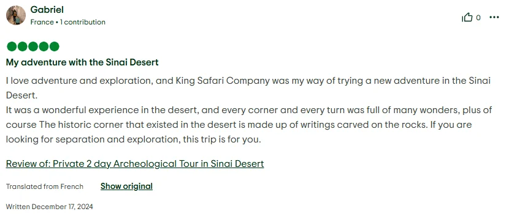

이것은 요가 리트릿이 아닙니다. 선생님도 일정표도 없습니다. 시나이 사막 깊은 곳에서의 4일, 가장 오래되고 고요한 곳에서 별빛 아래 보내는 사흘 밤, 그리고 명상하고 생각하고 그저 존재할 충분한 시간이 있을 뿐입니다. 밤마다 '터키석의 여주인' 하토르의 신전에 가까워지고, 그곳에서 일몰을 보고 별 아래 잠들고 일출과 함께 깨어납니다. 조셉과 아넷이 안내하고, 셰프 메리가 모든 식사를 요리하며, 나머지는 사막이 합니다.

터키석의 길
이 여행에는 이야기가 있습니다. 시작은 나와미스, 약 6,000년 전에 지어진 피라미드보다 오래된 원형 돌무덤입니다. 다음엔 고대의 터키석 동굴로 오릅니다. 이집트인들이 여신에게 바칠 청록색 돌을 캐던 곳입니다. 그리고 마지막은 여신의 신전입니다. 사랑과 음악과 기쁨의 여신, '터키석의 여주인' 하토르의 신전이 세라비트 엘 카딤의 산꼭대기에 있습니다. 이집트에서 이렇게 오래되고, 이렇게 조용하고, 이렇게 찾는 이가 드문 곳은 많지 않습니다.

여정
- 1일차: 다합 → 히두다 모래 언덕 → 게벨 마크룸(드래곤헤드 산)에서 점심 → 나와미스. 오후, 일몰, 그리고 고요한 밤을 나와미스에서
- 2일차: 나와미스에서 일출 명상 → 고대 터키석 동굴 아래 계곡으로 이동 → 동굴까지 약 1시간 오르고, 고요 속에 머문 뒤 하산. 계곡의 캠프에서 저녁과 숙박
- 3일차: 세라비트 엘 카딤으로 이동. 점심과 그늘에서의 조용한 휴식. 15:00경 일몰을 보러 하토르 신전에 오르고, 저녁 식사와 별 관찰 후 신전 근처 캠프에서 숙박
- 4일차: 신전에서 일출 → 하산 → 점심 → 다합으로 돌아와 늦은 오후 도착


명상하는 법을 알려 드리지 않습니다. 사막은 그것을 가르쳐 줄 만큼 충분히 고요합니다.

밤하늘, 그리고 빛
어느 마을에서도 멀리 떨어진 세라비트 엘 카딤과 나와미스는 이집트에서 가장 어두운 밤하늘을 가진 곳 중 하나입니다. 맑은 밤에는 지평선에서 지평선까지 은하수가 보입니다. 수년간 몇몇 손님과 현지 베두인이 이곳 하늘에서 움직이는 이상한 빛을 보았다고 말해 주었습니다. 저희는 직접 본 적이 없고, 아무것도 약속할 수 없습니다. 하지만 시나이에는 이런 이야기의 긴 역사가 있으며, 2022년에는 여러 미군 퇴역 군인이 2014년 시나이 국경 상공에서 설명할 수 없는 빛을 보았다고 말했습니다. 이야기 읽기
가기 전에 보세요
세라비트 엘 카딤: 터키석 광산과 하토르 신전
세라비트 엘 카딤의 파라오 시대 터키석 광산
피라미드보다 오래된 나와미스 무덤
포함 사항
- 다합 호텔 또는 The Hub 픽업·샌딩
- 4일 내내 그룹 전용 4x4
- 모든 허가와 베두인 비용
- 셰프 메리가 요리하는 4일간의 모든 식사
- 물, 차, 커피
- 캠핑 장비: 매트리스, 담요, 침낭
- 가이드 조셉과 아넷
불포함: 별 관측 장비(망원경 또는 쌍안경), 팁, 개인 경비.
준비물
- 여권 (내륙 도로에 검문소가 있습니다)
- 좋은 등산화
- 밤을 위한 따뜻한 옷 (산은 춥습니다)
- 헤드랜턴
- 명상에 도움이 되는 것: 일기장, 숄, 방석
이 여행이 나에게 맞을까요?
편안함보다 고요함을 원하는 분을 위한 여행입니다. 별빛 아래 야외에서 자고, 샤워 시설은 없으며, 터키석 동굴과 신전까지 각각 약 1시간의 가파른 오르막이 두 번 있습니다. 운동선수일 필요는 없지만 자기 속도로 오르막을 걸을 수 있어야 합니다. 따라야 할 프로그램은 없습니다. 산책에 함께하거나, 캠프에 남아 자신과 함께 앉아 있어도 됩니다.
요금
$1,600 1~2명 · 3~4명은 $2,200
이 여행 예약하기
날짜와 인원을 WhatsApp으로 보내 주세요. 날짜를 확정하고 예약금 결제를 위한 안전한 링크를 보내 드립니다. 나머지는 다합에서 결제하시면 됩니다.
WhatsApp으로 예약고객 후기

취소
투어 3일 전까지 무료 취소. 그 이후 취소는 전액이 청구됩니다.